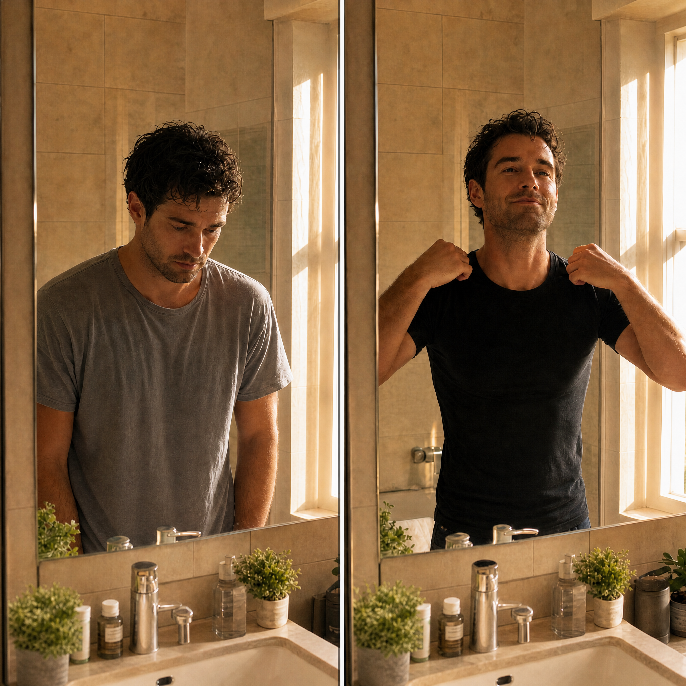
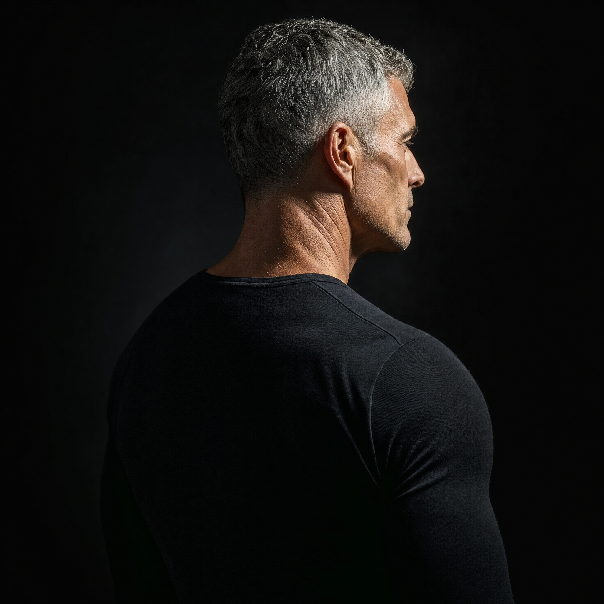
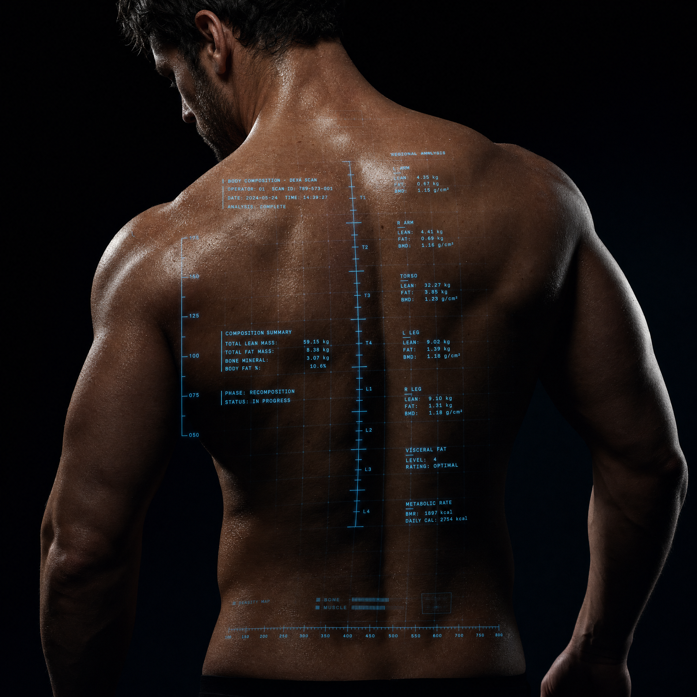
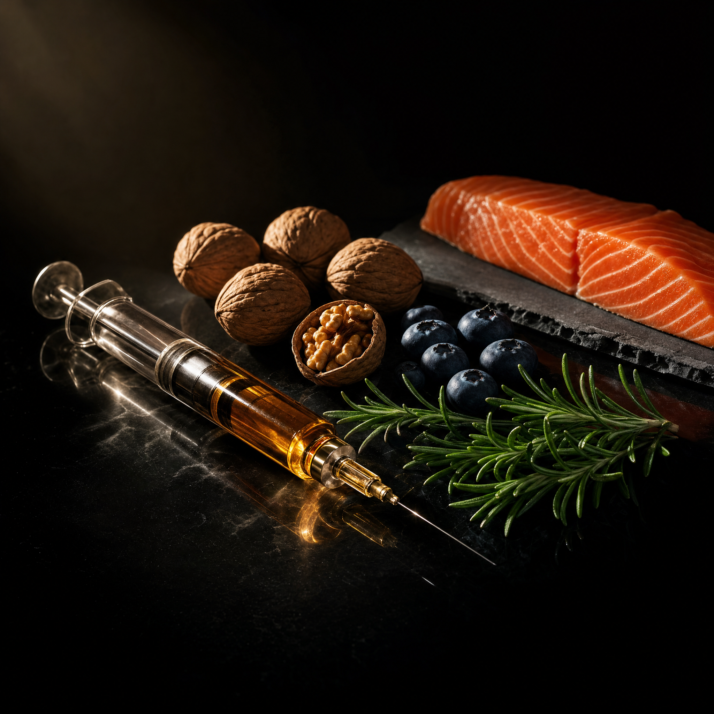

Six Pathways. One Clear Direction.
不是让你一次解决所有问题。是找到一个入口，然后我们陪你把身体逐层校准。

睾酮不是数字游戏。是精力、代谢、情绪、性功能的底层引擎。
中国男性睾酮水平在过去 30 年持续下降——环境、压力、生活方式都在加速衰退。多数人体检报告上的睾酮值在"正常范围"内，但身体早已在低位运行。我们不止测一个总睾酮：游离睾酮、性激素结合球蛋白、雌二醇——全套激素轴评估，让你看到真正的能量水位。方案不是"补上去"，是根据你的基线、年龄、生活方式找到最适配的干预路径：从营养调整到循证医学方案，从运动节律到压力管理。
勃起功能是血管健康的风向标。治标不如溯源。
ED 在中国常被简化为"肾虚"或"心理问题"，一笔带过。但临床数据显示：50%以上的 ED 与血管内皮功能、激素水平、代谢异常直接相关。TST 不做表面处理——我们先排查：激素轴是否失衡？血管弹性如何？代谢指标有没有拖后腿？找到真正的障碍点，方案才能精准。从口服药物到低能量冲击波、从激素调整到生活方式干预，每一步都有数据依据。

抗衰不是回到25岁。是让35、45、55岁的你，比同龄人年轻一个身位。
男性衰老有明确的生物学标记：睾酮下降、生长激素减少、线粒体效率降低、炎症因子升高、氧化应激积累。大众抗衰市场让你吞补剂、打昂贵针剂——但不知道你的身体到底缺什么。TST 先做一个完整的衰老标记谱评估：激素、端粒、氧化应激、微量元素、代谢弹性。拿到数据后再决定哪些值得干预、哪些只需生活方式调整。把钱花在有数据支持的地方，而不是跟风。

你不是易胖体质。是你的代谢引擎需要重新校准。
绝大多数男性减肥失败不是因为吃太多或动太少——是代谢适应性下降：胰岛素抵抗、甲状腺功能降低、皮质醇紊乱、睾酮不足——四重枷锁同时出现。TST 的方法：先做全套代谢检测——胰岛素、糖化、甲状腺、皮质醇节律、性激素、体成分分析——定位你的代谢阻滞点。在此基础上，不是给你一份通用减脂食谱，而是结合多肽方案、精准营养、运动节律调整，重新校准你的能量代谢系统。减脂不是终点，是代谢健康的最明显信号。

不是缺什么补什么。是让身体重新学会自己修复。
传统营养补充的逻辑是"检测缺锌→补锌"。但人体的营养利用是网络化的：缺锌可能不是摄入不够，是吸收通路受阻；补了没用可能不是剂量太低，是协同因子缺失。TST 结合功能医学营养素检测与循证多肽方案——多肽不是补剂，是信号分子：告诉细胞修复、再生、抗炎、重建。从代谢调节多肽到组织修复多肽，从微量元素精准配比到肠道菌群调整，每一步基于你的检测数据定制。
压力、睡眠、情绪——不是软肋，是任何一个高性能系统的核心指标。
中国男性被教育"扛着"。压力不说，情绪不露，失眠忍着。但皮质醇和睾酮共享同一个原料池——压力激素长期走高，睾酮必然走低。睡眠不足 6 小时，睾酮水平第二天直接下降 10-15%。TST 把心理健康纳入男性健康管理的核心维度：不是心理治疗，是性能调校。通过皮质醇节律检测、睡眠质量评估、神经系统平衡分析，找到拖累你状态的隐性因素，用循证方法帮你重建节奏。
Six Pathways. One Starting Point.
不确定从哪里开始？申请入会评估，我们用数据告诉你。
申请入会评估